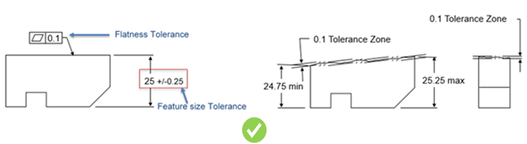
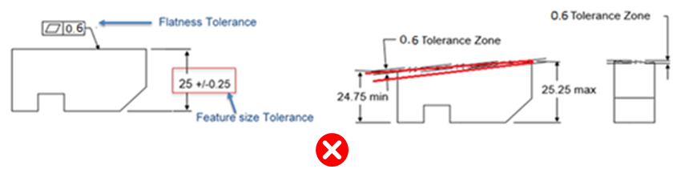
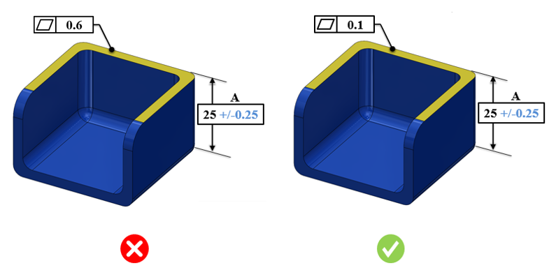
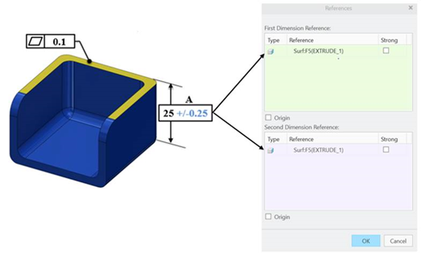

3D CAD 上で指定されている幾何公差（GD&T）情報および PMI 情報を特定し、フィーチャサイズ公差値と照合して検証します。
平面度公差は、指定された面が収まるべき 2 つの平行平面によって定義される公差域を示します。平面度公差は、常にそれに関連付けられた寸法公差よりも小さくなります。一般的なガイドラインでは、平面度公差は寸法公差の 1/2 以下であるべきとされています。
一般的なガイドラインでは、平面度公差は寸法公差の 1/2 以下であることが推奨されています。
DFMPro では、フィーチャサイズ公差に対する倍率として値を設定できます。

平面度公差域の値は、フィーチャサイズ公差域の値よりも小さくなければなりません。すなわち、0.1 < 0.5 です。

平面度公差域の値は、フィーチャサイズ公差域の値よりも大きくなってはなりません。すなわち、0.6 は 0.5 を超えてはなりません。

注記：
CAD モデルで指定されている公差は、eDrawings レポートには表示されません。
本ルールは、幾何公差が付与されているパーツモデルに対して実行されます。
最大平面度公差条件を確認するには、平面度公差が付与されている参照面を持つ寸法公差が必要です。
